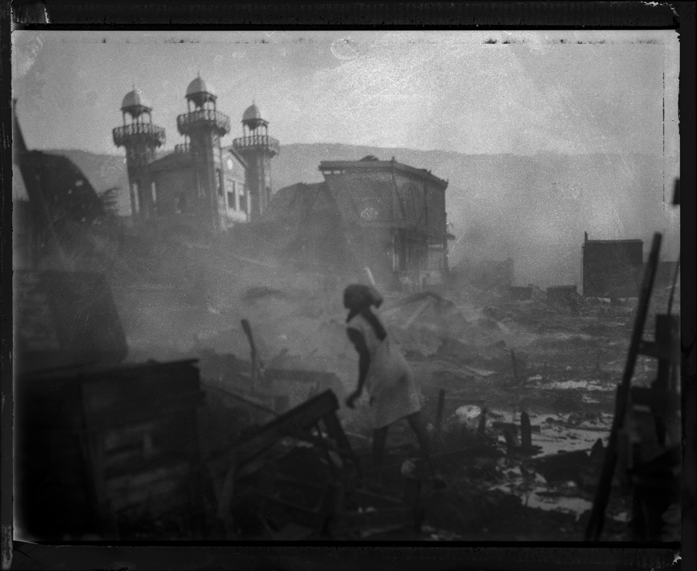
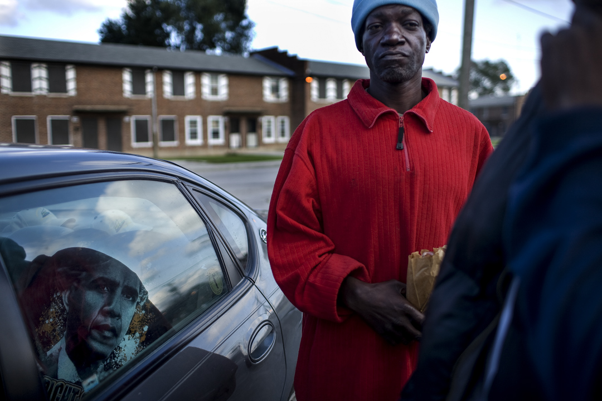
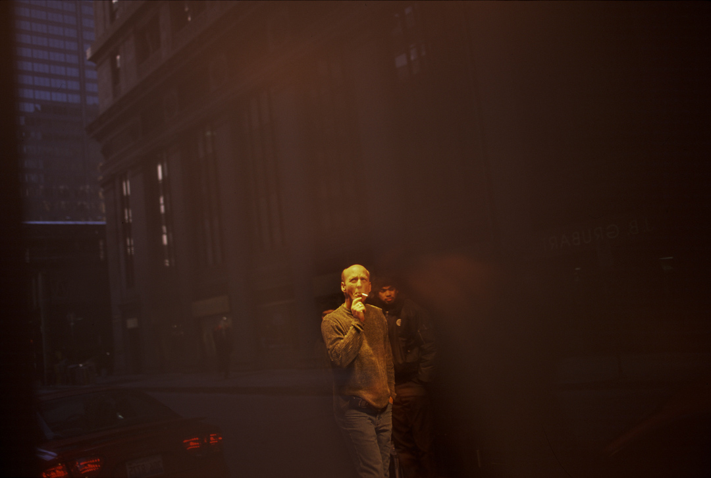

To witness is to stay.
Witness is Artefakt's founding pillar — long-form documentary photography and film grounded in community trust, earned access, and ethical rigor. Years rather than weeks. Return visits rather than parachute coverage. The work is made inside communities, over time, with consent — and it stays there, in the permanent archive, held with the same care it took to make it.
2026 – 2027 · Inaugural season.
Four exhibitions. Five photographers.
Work made inside communities, not extracted from them.

Chicago
Long-form documentary practice, ongoing since 2001. The relationships are the foundation.
South Side
2019

Lives
Migration from Central America and Mexico. A decade-long documentary commitment.
2005 – 2019

Treaty 7
New work. Same method. The practice extends north.
2024 – 2025
Est. 2026
Calgary + Chicago